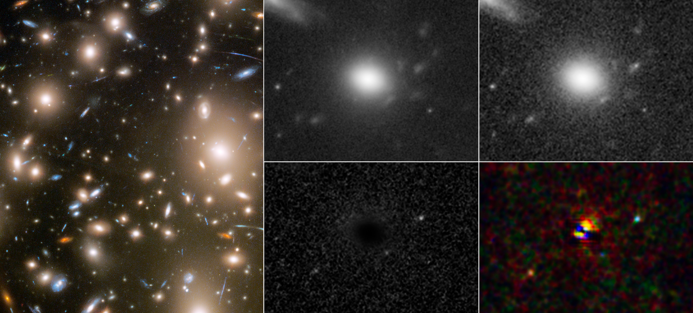

Hubble captura 3 faces de supernova em evolução no início do universo
Esta postagem é apenas um resumo, o link da documentação oficial está => NASA
Três momentos diferentes em uma explosão de supernova distante foram capturados em um único instantâneo pelo Telescópio Espacial Hubble da NASA. A estrela explodiu há mais de 11 bilhões de anos, quando o universo tinha menos de um quinto de sua idade atual de 13,8 bilhões de anos.
Este é o primeiro olhar detalhado de uma supernova tão cedo na história do universo. A pesquisa pode ajudar os cientistas a aprender mais sobre a formação de estrelas e galáxias no início do universo. As imagens da supernova também são especiais porque mostram os estágios iniciais de uma explosão estelar.
Através de um fenômeno chamado lente gravitacional, três momentos diferentes em uma explosão de supernova distante foram capturados em um único instantâneo pelo Telescópio Espacial Hubble da NASA. A luz da supernova, localizada atrás do aglomerado de galáxias Abell 370, foi multiplicada pela imensa gravidade do aglomerado.
Créditos: CIÊNCIA: NASA, ESA, STScI, Wenlei Chen (UMN), Patrick Kelly (UMN), Hubble Frontier Fields
“É muito raro que uma supernova possa ser detectada em um estágio muito inicial, porque esse estágio é muito curto”, explicou Wenlei Chen, primeiro autor do artigo e pesquisador de pós-doutorado na Escola de Física e Astronomia da Universidade de Minnesota. “Dura apenas algumas horas a alguns dias e pode ser facilmente perdido, mesmo para uma detecção próxima. Na mesma exposição, podemos ver uma sequência de imagens – como várias faces de uma supernova.”
Isso foi possível através de um fenômeno chamado lente gravitacional, que foi previsto pela primeira vez na teoria da relatividade geral de Einstein. Neste caso, a imensa gravidade do aglomerado de galáxias Abell 370 atuou como uma lente cósmica, dobrando e ampliando a luz da supernova mais distante localizada atrás do aglomerado.
A deformação também produziu várias imagens da explosão em diferentes períodos de tempo que chegaram à Terra ao mesmo tempo e foram capturadas em uma imagem do Hubble. Isso só foi possível porque as imagens ampliadas tomaram diferentes rotas através do aglomerado devido tanto às diferenças no comprimento dos caminhos que a luz da supernova seguiu quanto à desaceleração do tempo e da curvatura do espaço devido à gravidade.
A exposição do Hubble também capturou a rápida mudança de cor da supernova, que indica mudança de temperatura. Quanto mais azul a cor significa que mais quente é a supernova. A primeira fase capturada aparece em azul. À medida que a supernova esfriava, sua luz ficou mais vermelha.
“Você vê cores diferentes nas três imagens diferentes”, disse Patrick Kelly, líder do estudo e professor assistente da Escola de Física e Astronomia da Universidade de Minnesota. “Você tem a estrela massiva, o núcleo colapsa, produz um choque, aquece, e então você a vê esfriar ao longo de uma semana. Acho que essa é provavelmente uma das coisas mais incríveis que já vi!”
Esta é também a primeira vez que os astrônomos foram capazes de medir o tamanho de uma estrela moribunda no início do universo. Isso foi baseado no brilho e na taxa de resfriamento da supernova, que dependem do tamanho da estrela progenitora. Observações do Hubble mostram que a supergigante vermelha cuja explosão de supernova os pesquisadores descobriram era cerca de 500 vezes maior que o Sol.
Chen, Kelly e uma equipe internacional de astrônomos encontraram esta supernova vasculhando os arquivos de dados do Hubble, procurando por eventos transitórios. Chen escreveu algoritmos de aprendizado de máquina para encontrar esses eventos, mas esse foi o único transiente identificado.
Chen e Kelly têm tempo planejado para o Telescópio Espacial James Webb da NASA observar supernovas ainda mais distantes. Eles esperam contribuir para um catálogo de supernovas muito distantes para ajudar os astrônomos a entender se as estrelas que existiram há muitos bilhões de anos são diferentes daquelas do universo próximo.
O artigo da equipe, intitulado “Shock cooling of a red-supergiant supernova at redshift 3 in lensed images”, será publicado na Nature em 10 de novembro.
O Telescópio Espacial Hubble é um projeto de cooperação internacional entre a NASA e a ESA. O Goddard Space Flight Center da NASA em Greenbelt, Maryland, administra o telescópio. O Space Telescope Science Institute (STScI) em Baltimore conduz as operações científicas do Hubble. STScI é operado para a NASA pela Association of Universities for Research in Astronomy, em Washington, DC
Para mais informações sobre este estudo e o Hubble, visite: